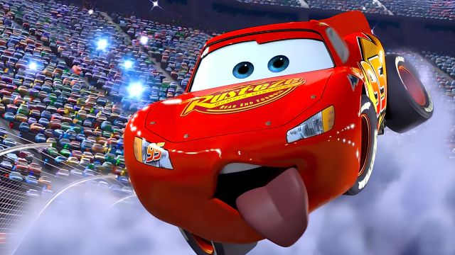

eu escolhi o formação de docenetes para seguir a proffissão de professora e seguir o mesmo caminho que minha irmã, as minhas motivações foram as conversar que tive com a minha irmã que desde sempre me motivou muito.
minhas expectativas são conseguir transformar crianças por meio da educação
